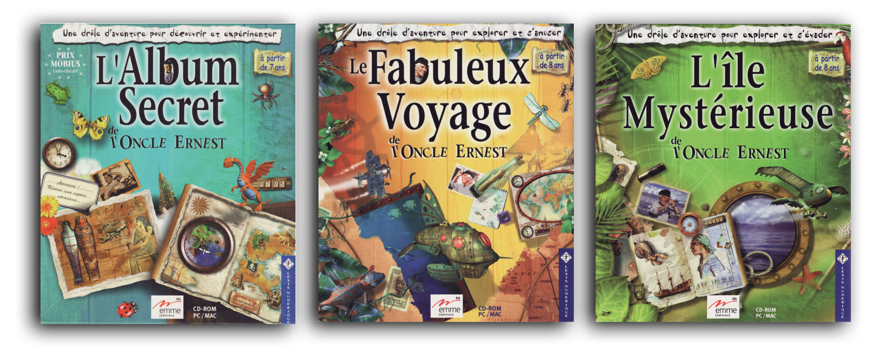
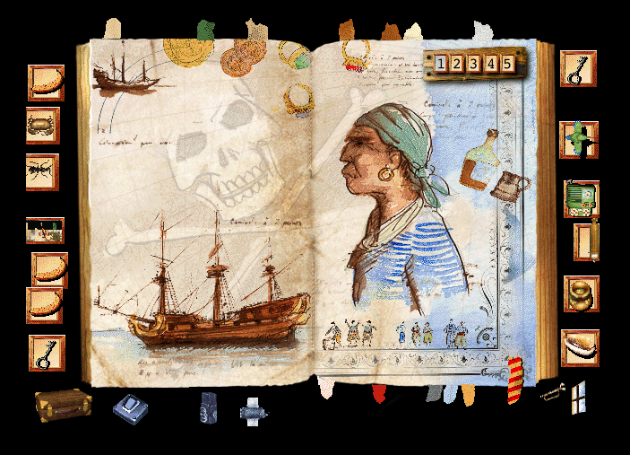
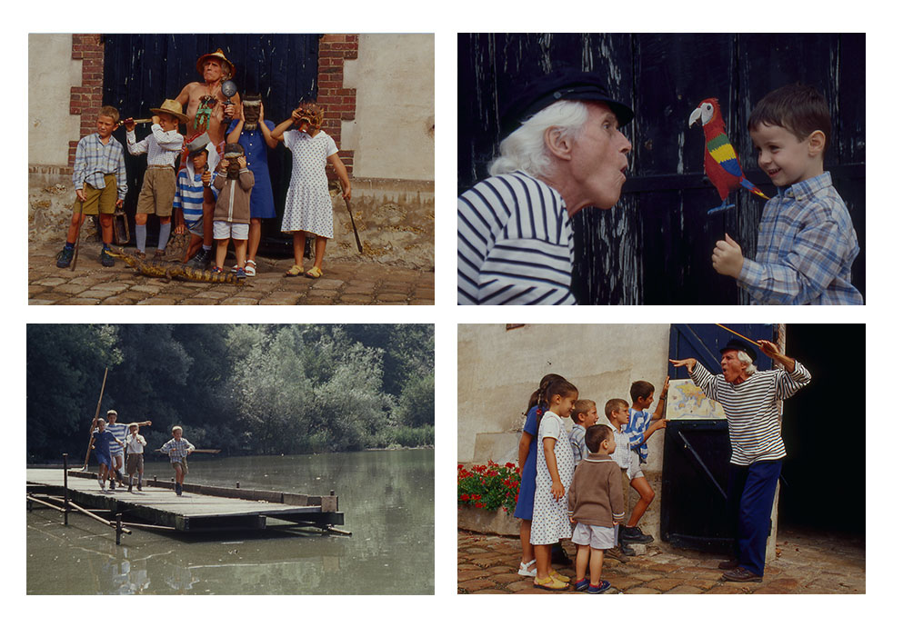

PRESENTATION
En octobre 1998 parait l’Album secret de l’oncle Ernest. Le succès est fulgurant. En quelques semaines, le titre se retrouve parmi les meilleures ventes de jeux vidéo de fin d’année. Il faut dire que le concept a tout pour plaire : les enfants sont embarqués par l’aventure et la quête d’un trésor, ravis de la liberté qu’offre le jeu, fait rare à l’époque ; les parents sont séduits par sa dimension éducative mais aussi par son aspect drôle et poétique.
L’année suivante sort Le Fabuleux voyage qui vient confirmer et amplifier l’engouement du public pour l’originalité de ce jeu, sorti de nulle part, et la richesse de son univers. L’Ile mystérieuse viendra clore la trilogie, qui sera suivie de deux autres titres, parus quelque années plus tard : le Temple Perdu et la Statuette Maudite.
Au total, les aventures de l’oncle Ernest seront traduites en plus d’une quinzaines de langues et se vendront à plus de 750000 exemplaires (ce qui, à l’époque, est une prouesse pour un titre ludo-éducatif).

Concept
Les aventures de l’oncle Ernest inaugurent un nouveau concept de jeu d’aventure qui se déroule dans un album illustré, peuplé d’objets, d’outils et de petits animaux « vivants » avec lesquels le joueur peut interagir. L’enfant doit réussir les missions qui sont proposées dans chacune des pages pour accéder à des parties secrètes, cachées au préalable. Pour cela, il doit déplacer les objets d’une page à l’autre afin de s’en servir pour résoudre certaines énigmes. Au fur à mesure qu’il avance dans l’aventure, il découvre de petits films que l’oncle Ernest a laissé pour créer sa propre légende.

Univers
« Ma mère avait un oncle qui s’appelait Ernest. C’était un drôle d’aventurier… »
Influencées par les récits de Stevenson et de Jules Verne, les aventures de l’oncle Ernest, dont on ne sait pas vraiment si elles sont vécues ou inventées, sont peuplées d’îles mystérieuses, d’animaux fabuleux, de récits de marins, de trésors cachés, d’inventions loufoques, de personnages pittoresques.
Elles se déroulent dans les années 50, à l’époque où voyager dans certains pays était déjà encore une aventure en soi. Si les récits laissent une grande place au rêve et à l’imagination, ils sont très documentés ce qu’il leur donne beaucoup d’authenticité.
Fait assez rare également, Eric Viennot a tenu à intégrer de vrais films, tournés avec un acteur, afin de renforcer la véracité du personnage. Influencés par le cinéma burlesque de Chaplin, et par les oeuvres de Jacques Tati, ces petits films racontent, de manière légère et poétique, les aventures de cet oncle fantasque. D’autres films, réalisés en image de synthèse, mettent en scène certaines inventions de l’oncle Ernest (avion-oiseau, sous-marin, fusée…) ou certains lieux inaccessibles qu’il a visité (île mystérieuse) ou imaginé (planète lointaine, etc.).
Succès international
Les aventures de l’oncle Ernest ont été traduites dans une quinzaine de langues. Elles ont reçu de nombreux prix internationaux. Elles ont fait l’objet de très nombreuses publications et citations dans la presse et les médias. Les cd-roms de l’Oncle Ernest ont été utilisés en classe par certains enseignants et ils ont fait l’objet de thèses diverses dans le domaine des sciences de l’éducation.
Les enfants et leurs parents qui ont joué aux Aventures de l’oncle Ernest gardent souvent un souvenir ému des heures passés à jouer ensemble en sa compagnie. Parmi ces enfants, certains ont conservé précieusement leur cd-rom et il arrivait encore à Eric Viennot d’en dédicacer. Certains lui ont même dédié des vidéos de retro-gaming.